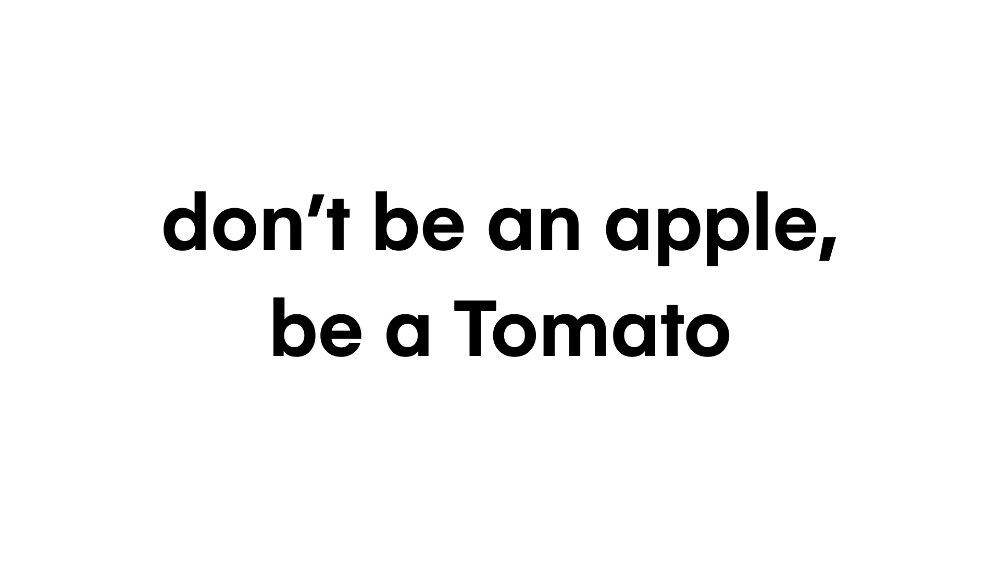
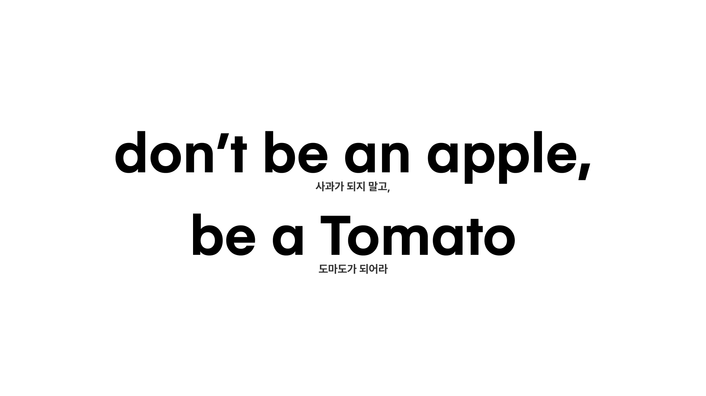
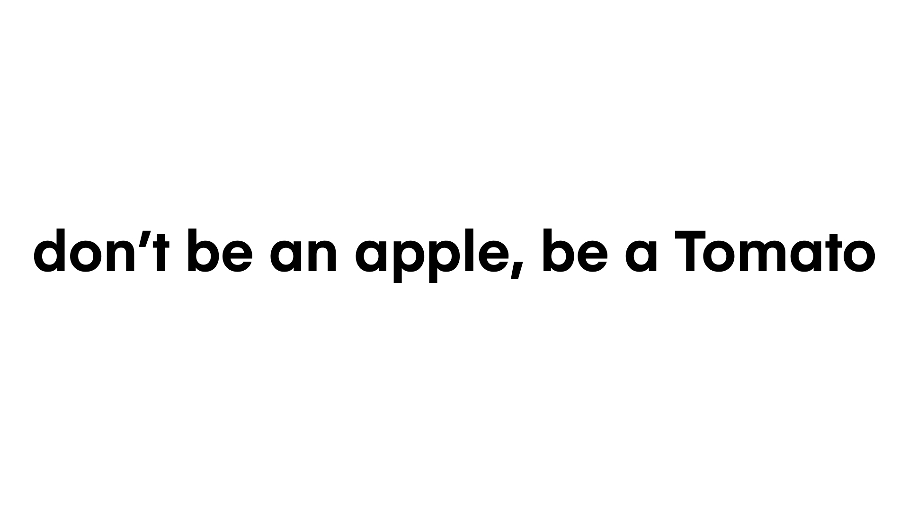
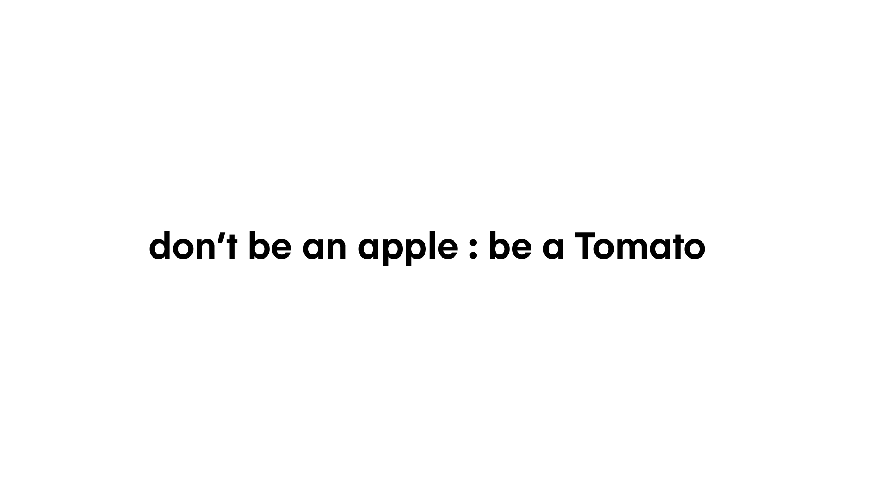
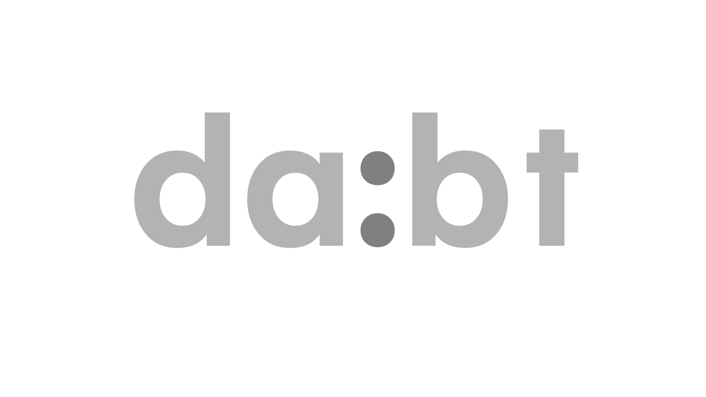
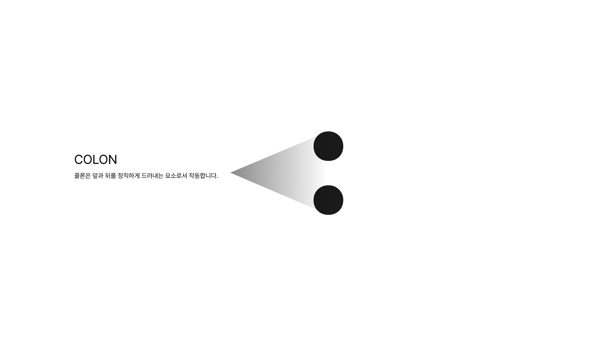
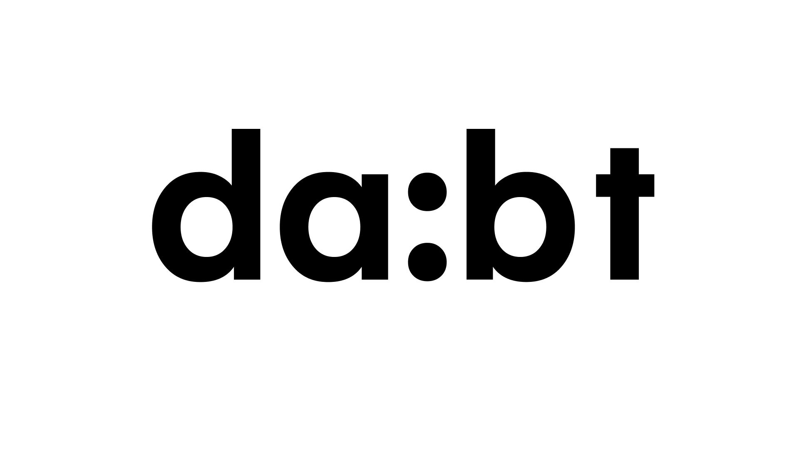
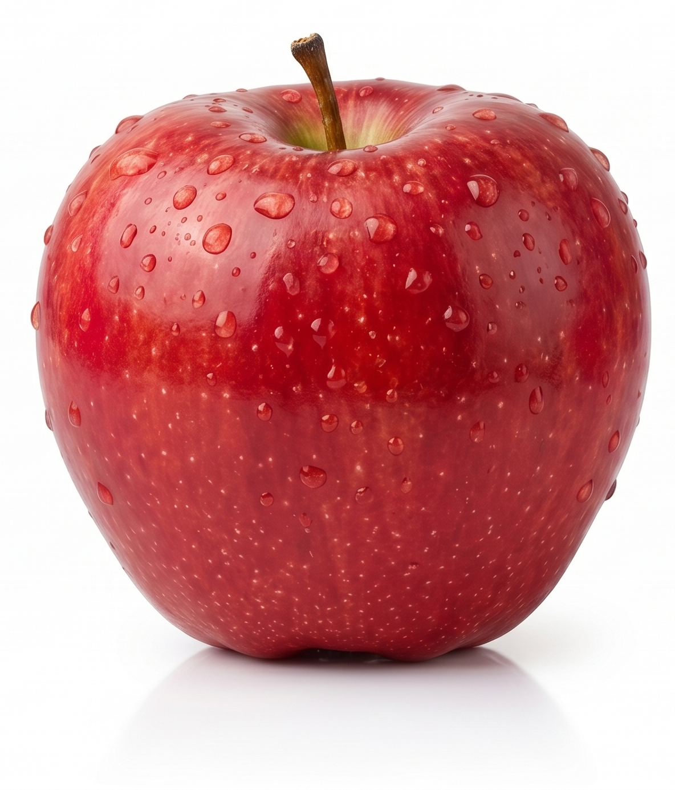

사과는 겉은 붉지만
속은 하얗습니다.
세상이 말하는 기준에 맞추어 포장하기 위해,
정작 중요한 본질은 흐려진 채 겉모습만 꾸미고 있지는 않나요?







세상이 말하는 기준에 맞추어 포장하기 위해,
정작 중요한 본질은 흐려진 채 겉모습만 꾸미고 있지는 않나요?


da:bt는 겉과 속이 완전히 일치하는 투명함을 지향합니다.
불필요한 포장과 첨가물을 걷어내고 원재료의 정직함을 가득 채웁니다.


da:bt의 약속을 완성하는 12가지 원재료의 안과 밖을 돌려가며 탐색해보세요.
스와이프하여 다양한 과일의 효능을 알아보세요.